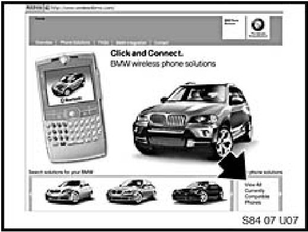
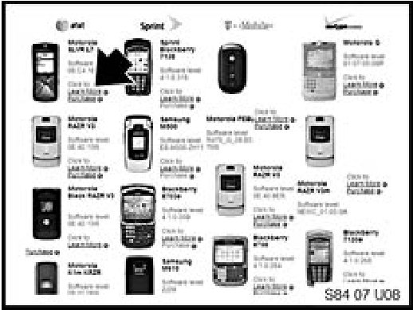
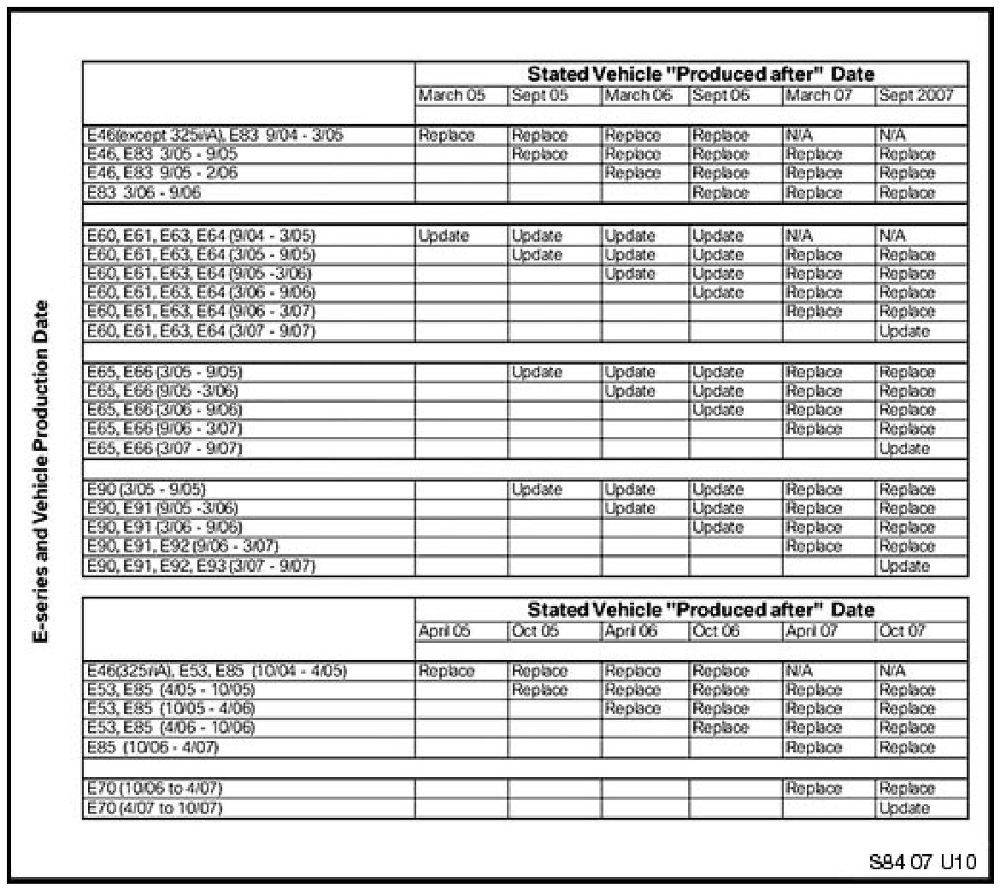
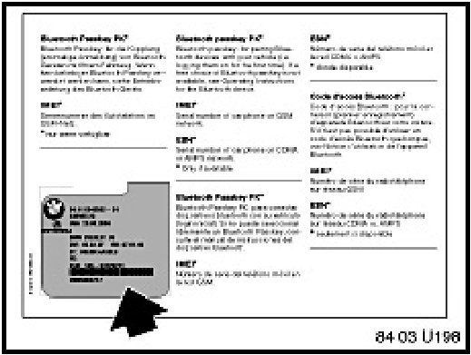
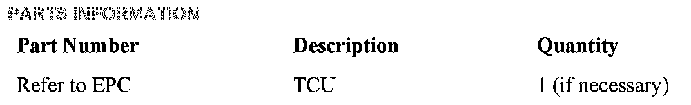

BMW Assist(R) - Upgrade To Support Bluetooth(R)
SI B 84 20 07Communication Systems
October 2008
Technical Service
This Service Information bulletin supersedes SI B84 20 07 dated November 2007.
[NEW] designates changes to this revision
SUBJECT
Upgrading BMW Assist to Support New Bluetooth Handsets
MODEL
E46 (3 Series) with Premium Package (ZPP) or BMW Assist (SA 639) from 9/04 production (325i/iA from 10/04 production)
E53 (X5) with Premium Package (ZPP) or BMW Assist (SA 639) from 10/04 production
E60, E61 (5 Series) from 9/04 to 9/07 production
E63, E64 (6 Series) from 9/04 to 9/07 production
E65, E66 (7 Series) from 3/05 to 9/07 production
E70 (X5) with Premium Package (ZPP) or BMW Assist (SA639) to 9/07 production
E83 (X3) with Premium Package (ZPP) or BMW Assist (SA639) from 9/04 to 9/07 production
E85, E86 (Z4) with Premium Package (ZPP) or BMW Assist (SA639) from 10/04 to 10/07 production
E90, E91, E92, E93 (3 Series) with Premium Package (ZPP) or BMW Assist (SA639) from 3/05 to 9/07 production
SITUATION
The customer requests to have the vehicle updated to support new compatible handsets. This is not a defect and must be paid for by the customer.
COMPATIBLE HANDSET INFORMATION
Visit www.bmwusa.com/bluetooth for a list of handsets that have passed BMW testing for compatibility. Note the following disclaimer on this web site:
^ "This list is provided for reference only. The mobile phones listed here have passed compatibility tests as of the date of testing and meet or exceed minimum standards established by BMW. The list is not a warranty for phone performance or functionality. BMW makes no guarantees or warrantees as to the performance of each phone while connected to your BMW via Bluetooth Wireless Technology. Furthermore, software releases by BMW, the phone supplier or the wireless carrier dated after testing might alter compatibly results. While many phones are offered with Bluetooth Wireless Technology, not all phones support the necessary profiles to work with your BMW. BMW does not guarantee availability or functionality with all wireless carriers. Functions such as synchronizing the address book and transferring a call into or out of the vehicle may function differently from phone to phone".
PROCEDURE

1. Together with the customer, go to www.wireless4bmw.com.
2. Then click on "View All Currently Compatible Phones".
- NOTE: Make sure that the customer does not purchase a handset until a vehicle needs assessment has been performed. It may not be possible to update the vehicle to be compatible with the prospective handset. This is outlined in step 4.
[NEW]

3. Review the handset choices with the customer.
4. Review the chart below to assess the vehicle requirements to determine whether the vehicle can meet the customer's handset preference.
^ [NEW] If the chart states "Update", proceed to step 5.
^ If the chart states "Replace", the TCU must be replaced
^ Refer to the "TCU REPLACEMENT PROCEDURE" section of this bulletin.
^ If "N/A" is stated in the chart, it is not possible to update the vehicle to support the customer's handset. For example, the customer has an 11/04 E83 and would like to pair it to an iPhone. The iPhone is currently only compatible with 9/06 and new production vehicles.

5. Update the complete vehicle as per SI B09 05 01 (Coding, Individualization, Programming), procedure B, using the latest version of Progman.
6. Turn the ignition off and allow the TCU to assume sleep mode.
^ On MOST-bus vehicles, wait for the MOST-bus to enter sleep mode (approximately 4 minutes).
^ On I/K-bus vehicles, turn the ignition off for 2 minutes.
7. If the customer's new handset was previously paired to the vehicle and the vehicle did not have the TCU replaced (e.g., the customer purchased the new handset and tried pairing it to the vehicle to see if it would work):
^ Delete the vehicle from the handset's Bluetooth device list. Refer to the handset owner's manual for more details.
^ Delete the handset from the vehicle's Bluetooth device list.
8. Pair the customer's new handset to the vehicle.
9. Allow the phone book to complete downloading.
10. Test the system for proper operation by placing a phone call via the vehicle controls (e.g., iDrive, radio, etc.).
TCU REPLACEMENT PROCEDURE
1. It is NOT necessary to obtain a Part Replacement Authorization (TeileClearing) as this is NOT a warranty issue. All costs are the customer's responsibility.
2. Refer to TIS (RA 84 11...) for the TCU replacement procedure.
3. Before installing the new TCU, remove one copy of the Electronic Serial Number (ESN) label and place it on the repair order for reference.

4. The second ESN label of the TCU should be affixed over the existing label in the Owner's Manual insert (P/N 01 49 0 157 963).
5. Complete the TCU installation.
6. Using Progman V27.02.00 or higher, program the complete vehicle. Refer to SI B09 05 01 "Coding, Individualization and Programming", Procedure A.
7. On E60, E61, E63, E64, E65 (from 3/05), E66 (from 3/05), E70, E90, E91, E92, and E93 vehicles: Initialize BMW Assist, following the procedure as outlined in the "INITIALIZATION OF BMW ASSIST SERVICES" section of this bulletin.
8. Test BMW Assist by following the procedure outlined in the "TEST OF BMW ASSIST SERVICES" section of this bulletin.
INITIALIZATION OF BMW ASSIST SERVICES ON E60, E61, E63, E64, E65 (FROM 3/05), E66 (FROM 3/05), E70, E90, E91, E92 AND E93 VEHICLES
1. The BMW Assist services initialization procedure must be completed per SI B84 15 03 for all vehicles.
The vehicle must be in the Verizon Wireless Network for the initialization procedure to work properly. If the vehicle is not in the Verizon Wireless Network, perform the outlined procedure and then follow these additional steps:
^ Create a PuMA case to receive TCU shipping authorization.
^ Remove the TCU from the vehicle.
^ Send the TCU, BMW Assist TCU Reactivation Form with the new MIN/MDN numbers, and a copy PuMA case via FedEx to:
[NEW] BMW of North America, LLC
Attn: TCU Teileclearing (TCU Reactivation B84 20 07)
150 Chestnut Ridge Road
Woodcliff Lake, NJ 07677-7731
^ BMW of North America will initialize the TCU and ship it out on the business day on which it was received.
^ After receiving the TCU from BMW of North America, reinstall the TCU and place a BMW Assist call as outlined in the "TEST OF BMW ASSIST SERVICES" section of this bulletin.
^ All shipping charges (both ways) are to be billed to the dealer's FedEx account. On the warranty claim, submit the FedEx shipping charges (double the amount provided to you by Teileclearing to cover shipment both ways) in the sublet section (using sublet code 4).
2. Test BMW Assist, following the procedure outlined in the "TEST OF BMW ASSIST SERVICES" section of this bulletin.
TEST OF BMW ASSIST SERVICES
Test the BMW Assist service for proper operation by placing a test call (press the Roadside Assistance "wrench" button). Make sure the BMW Assist Response Center has received the correct MIN/MDN/VIN and location of the vehicle. Have the representative update his or her records as needed.
^ If a TCU is replaced on a vehicle with an inactive BMW Assist account and a BMW Assist call is made, the call will be routed to an automated system until the TCU is deactivated.
^ For customers who would like to renew their BMW Assist services, refer to SI B84 22 05 (Reactivation of BMW Assist Services).
If the connection is established but voice communication is not established, call BMW Assist Customer Care immediately, option 4, to cancel the dispatch. Failing to call will result in local emergency services being dispatched to your location.

PARTS INFORMATION
Do NOT look up the new TCU part number using the VIN. Look up the part number via the updated handset use application, e.g., the vehicle is a 4/05 E60 and the customer wants to use a handset that is approved for vehicles from 3/07 production. TCU part number 84 10 9 149 614 should be installed in the vehicle.
WARRANTY INFORMATION
This is NOT a warranty issue. All costs are the customer's responsibility.

Disclaimer